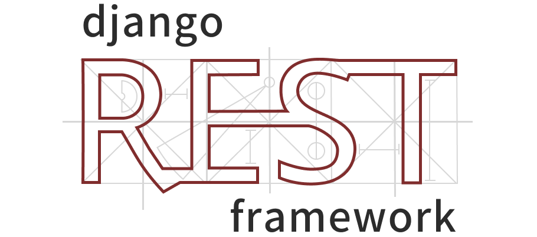

Django REST framework is a powerful and flexible toolkit for building Web APIs.
Some reasons you might want to use REST framework:
Requirements¶
REST framework requires the following:
- Django (5.2, 6.0, 6.1)
- Python (3.10, 3.11, 3.12, 3.13, 3.14)
We highly recommend and only officially support the latest patch release of each Python and Django series.
The following packages are optional:
- PyYAML, uritemplate (5.1+, 3.0.0+) - Schema generation support.
- Markdown (3.3.0+) - Markdown support for the browsable API.
- Pygments (2.7.0+) - Add syntax highlighting to Markdown processing.
- django-filter (1.0.1+) - Filtering support.
- django-guardian (1.1.1+) - Object level permissions support.